From consonant inventories...

All grades are final seven days after they are released
All other grades are final at the start of the exam
Double-check everything next week!
Clicker and SONA scores are being sorted soon
SET evaluations are currently at 51.28%, so unfortunately no extra credit yet; I'll give it until the end of the day
https://sites.google.com/view/matthewzaslansky/exampolicies has all the information you want
We’ll have a study session next Week (Monday 4-6pm in CENTR 222)
Where we've been...
...and where I've been
...where we're going: Your Linguistic Future
A Life in Language
The Secret to Great Linguistic Analysis
We've seen data from a lot of language, but we're only seeing the tip of the iceberg
This diversity isn't arbitrary or apparent only at the marginal fringes. It's a core defining feature of what makes language human
From consonant inventories...
...to vowel inventories...


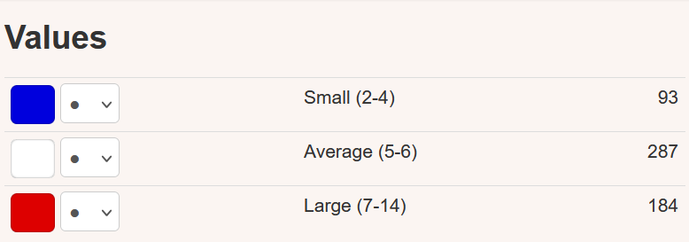
...to where we find tone and how complex it is...
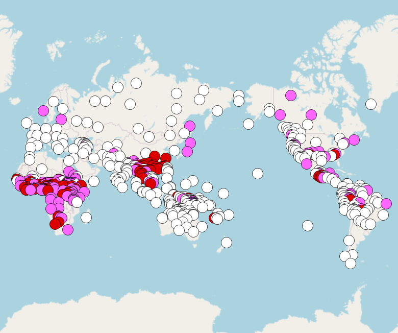

...even to which consonants are common and where!
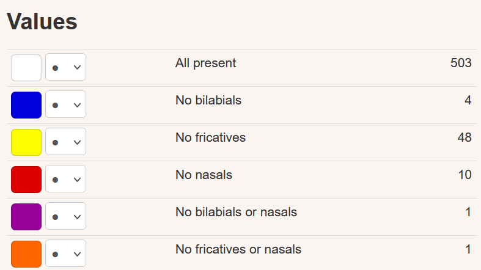
There's plenty of variation in morphology and syntax too
There's plenty of variation in morphology and syntax too
Morphology is perhaps the area where we see the most variation across languages
Just think of gender!
Some languages, like Turkish, completely lack it.
Some languages, like English, have it only in pronouns.
Some languages, like Russian, have it everywhere.
sobaka vidye-la koshk-u
dog.NOM see-SG.FEM.PST cat-ACC.FEM
“The dog saw the cat.”
ya vidye-la sobak-u
1SG.NOM see-SG.FEM.PST dog-ACC.FEM
“I saw the dog [and I am a woman].”
ya vidye-l sobak-u
1SG.NOM see-SG.MASC.PST dog-ACC.FEM
“I saw the dog [and I am a man].”
Turns out there's more variation in this than just having or not having gender...
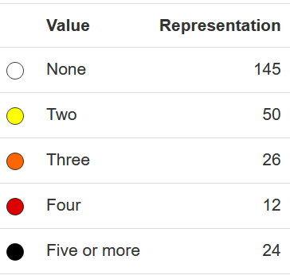

Languages like Arapesh (Torricelli, Papua New Guinea), have either as few as 13 genders or as many as 22 genders, depending on how you look at it.

(Source: Corbett & Fraser 2000)
Even the basic building blocks of our sentences vary
Remember word order?

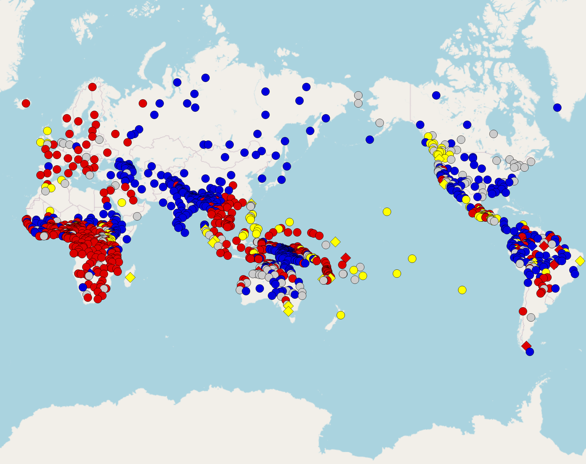
Some part of what we've learned about Linguistics has been fun!
To find out more about majors or minors, contact linginfo@ling.ucsd.edu :)
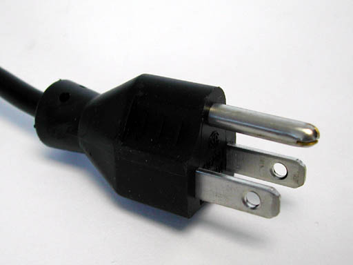
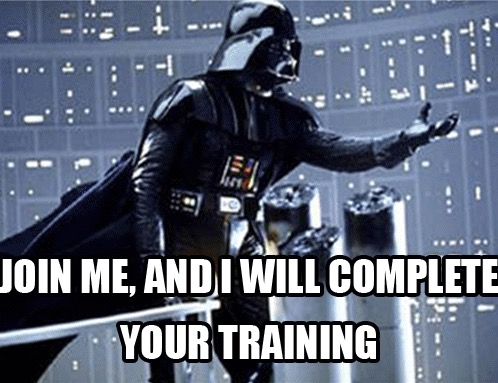
Serial language learners
Language Analyzers
Easily distracted by odd language use
People fascinated by the differences and similarities among languages
If any of those things sound like you, you might be a linguist

I was going to be a volcanologist!
I thought it would get me free trips to Hawai'i and that sounded cool.
Then Linguistics hunted me down.
How a language marks who did what to whom
Each case marker corresponds to a grammatical role
Nominative Case - “The Subject”
Accusative Case - “The Object”
sobaka vidye-la koshk-u
dog.NOM see-SG.FEM.PST cat-ACC.FEM
“The dog saw the cat.”
koshka vidye-la sobak-u
cat.NOM see-SG.FEM.PST dog-ACC.FEM
“The cat saw the dog.”
Ya tyebya vizh-u
I.NOM you.ACC see-1SG
“I see you”
Ti myenya vid-ish
you.NOM I.ACC see-2SG
“You see me”
Niloo - NOM, Turtle - ACC
Niloo - ACC, Turtle - NOM
Niloo - NOM, Turtle - NOM
Niloo - ACC, Turtle - ACC
Niloo - ACC, Turtle - NOM
Niloo - NOM, Turtle - NOM
Niloo - ACC, Turtle - ACC
I see him
I-NOM see he-ACC
He sees me
He-NOM see-3sg I-ACC
(… and I didn’t think I was a linguist)

Nominative Case - “The Subject”
Accusative Case - “The Direct Object”
Dative Case - “The Indirect Object or Recipient”
Genitive Case - “The Possessor (and more)”
Locative Case - “The Location (and more)”
Instrumental Case - “The Tool (and more)”
Marks possession
Marks the location of events
Marks an object being used
Andres pish-et karandash-om
Andres-NOM write-3sg pencil-INST
“Andres writes with a pencil”
Ya yem borscht so smetanoy
1sg-NOM eat borscht-ACC with sour.cream-INST
“I eat borscht with sour cream”
Marks the indirect object, or recipient of an item
Kevin dayot tsvet-i Lis-ye
Kevin-NOM give.3sg Flowers-ACC.PLUR Lisa-DAT
“Kevin gave Lisa flowers”
Enchilad-i mne da-la Niloo
Enchilada-ACC.PLUR 1sg.DAT give-PAST.FEM Niloo-NOM
“Niloo gave me Enchiladas”
Ya pomoga-yu Kevinu
1sg.NOM help-present.1sg Kevin-DAT
“I’m helping Kevin”
Mne zvoni-l Barack Obama
1sg-DAT call-past.masc Barack Obama-NOM
“Barack Obama called me”
Jony - ACC, Dieter - DAT, food - NOM
Jony - NOM, Dieter - DAT, food - ACC
Jony - NOM, Dieter - ACC, food - DAT
Jony - DAT, Dieter - ACC, food - NOM
Jony - NOM, Dieter - ACC, food - DAT
Jony - DAT, Dieter - ACC, food - NOM
Nominative Case - “The Subject”
Accusative Case - “The Direct Object”
Dative Case - “The Indirect Object or Recipient”
Genitive Case - “The Possessor (and more)”
Locative Case - “The Location (and more)”
Instrumental Case - “The Tool (and more)”
It’s actually way more complicated than this!
(Whoa! That looks like some of the argument roles we saw in lexical semantics!)
I saw him
… but Dative? We just can’t even.

150
1000
2500
4000
5500
150
1000
4000
5500
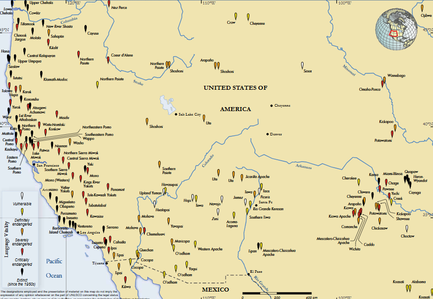
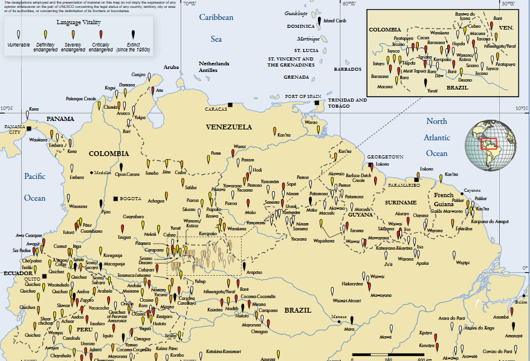
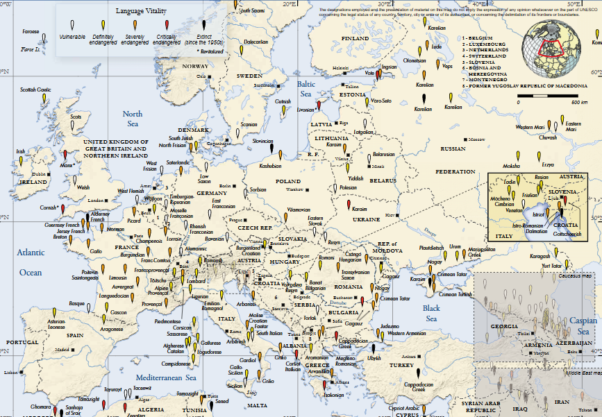
I took my professor's advice, and that brought me to Baku
Eat your heart out Russian, Lezgian has 18!

(Source: Haspelmath 1993)
stxa k'wal.i-z xta-na
brother.ABS house-DAT return-AOR
“The brother came back home.”
wax-a stxa k'wal.i-z raqur-na
sister-ERG brother.ABS house-DAT send-AOR
“The sister sent the brother home.”

Then Phonology and Syntax
Then Morphology
LIGN 8’s Equivalent
Then Semantics, then Pragmatics
Then some independent studies

I started looking at Grad schools
I got into some of them
(My application was straight trash.)
Phonetics
Phonology
Morphology
Syntax
Semantics and Pragmatics
Field Methods
Every two years (It’s at UMass Amherst in Summer 2023!)
Take courses from amazing professors in interesting topics
As a TA or Graduate Instructor
Working on or managing research projects
You’ll write large papers, alongside your coursework
A large research project where you need to advance the knowledge of the field (just a little!)
Mine is in progress (help)
“Oh, you’re a linguist? Cool! How many languages do you speak?!”
Lots of folks need linguists, but very few people know that they do or what we do!
We’re called “Ontologists”, “Natural Language Specialists”, “Customer Feedback Analyst”, “Language specialist”, “Translation Director” and many, many more
Industry loves Linguists, as we’re great at patterns
Linguists have experience with language data, not just numbers
This is where the CSS program can help!
Text to Speech, Speech Recognition, NLP, and more!
Google, Facebook, Apple, Amazon, and more hire and work with linguists!
The NSA/CIA/FBI (and more!) want linguists for analysis
Translation and language teaching like at the DLIFLC
Everybody wants people to teach English as a Second Language
Have language, will travel? Have job!
Speech Pathologists help adults and children having issues with communication, speech, swallowing, and voice.
Audiologists help test, diagnose, and address many hearing disorders, and work with people to find treatments (e.g. hearing aids) which address their needs and desires.
Both are steady, well-paid, and in demand jobs!
For these careers, consider our Speech and Language Sciences Major!
PostDocs are increasingly common
Also administrative and lab-management positions
… but lots of folks want to be a Tenure-Track Professor
You have job security (if you don’t screw up!)
You’ll do research
You’ll teach
You’ll do administrative stuff
You’ll fight for grant money
… but you’ll do all of it in pursuit of a field you love
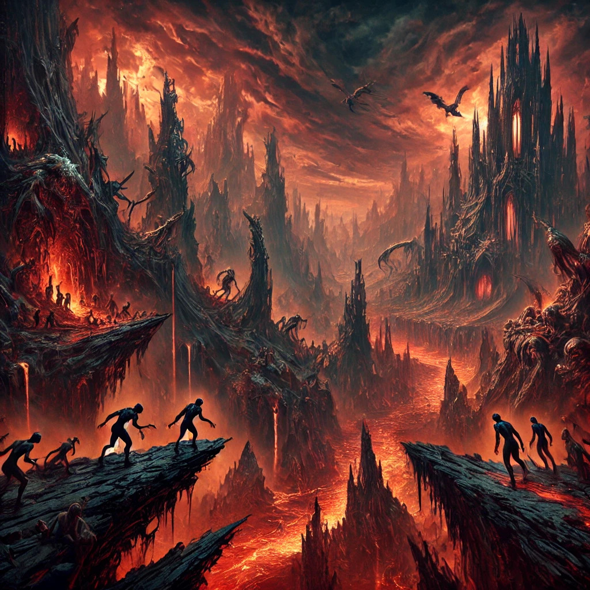
There will be 2-5 jobs per year in your subfield at well-known schools. Total.
Competition is fierce
You have to love teaching
“Wait your turn, you only need one job”
You’re going where the work is
You need to be able to tread water for a few years
You’re taking a vow of fiscal renunciation during Grad School
Maybe you’ll go down the rabbit hole
Maybe this class will do for you what LING 1 did for me
… and you’ll see the true beauty of language
Perhaps as part of your teaching or research, if you decide to go the academic route
Maybe in industry or defense, if that’s your path
Maybe for fun, on the weekends
You’ll want to do it well!
Many not until a post-doc
Some, not until they’re full professors
Some poor souls never figure it out!
… but you’ll know it today!
| Russian | English | Russian | English | Russian | English |
|---|---|---|---|---|---|
| djelat | ‘to do’ | pit | ‘to drink’ | staret | ‘to grow old’ |
| djelaju | ‘I do’ | pju | ‘I drink’ | stareju | ‘I grow old’ |
| djelajet | ‘(s)he does’ | pjet | ‘(s)he drinks’ |
starejet |
‘(s)he grows old’ |
… and see the beauty of language
Wherever you may go